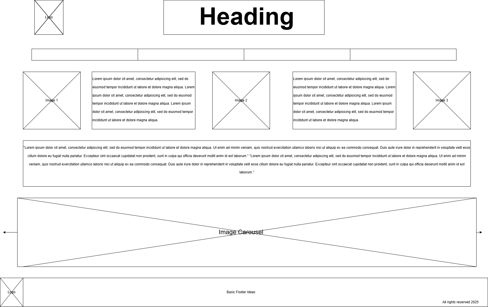
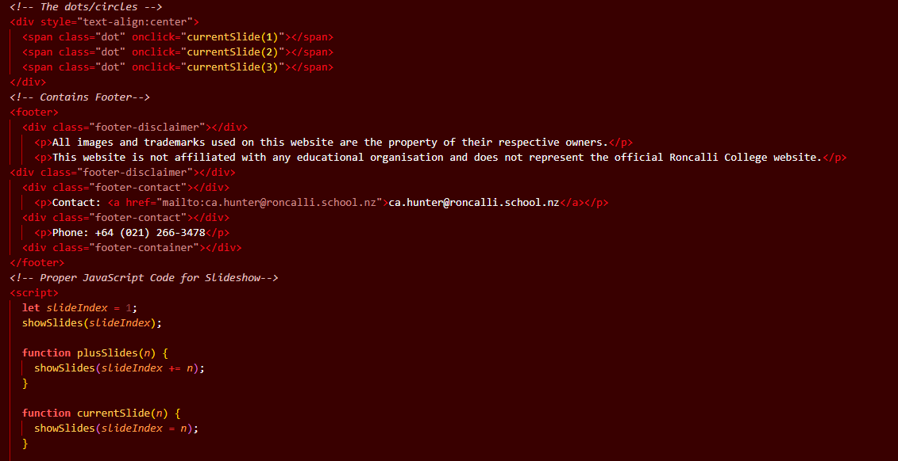
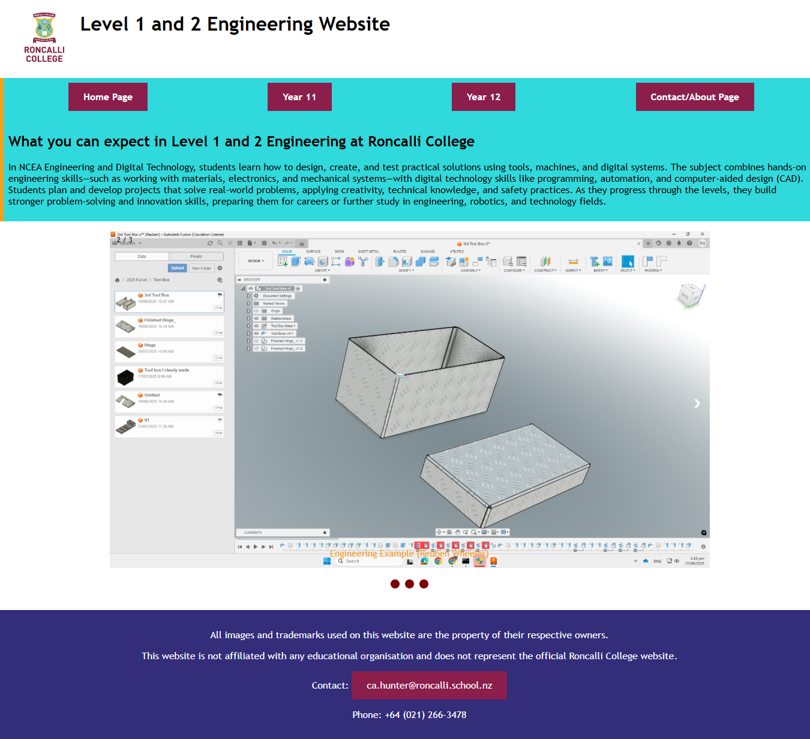

Website Development
Website development brings together content, design, and code to create useful experiences on the web. Students can plan a site's purpose and audience, organise information into clear pages, and use HTML to structure content and CSS to control its appearance. JavaScript can add interactive features, while testing helps ensure that pages work across different screen sizes and browsers. Effective websites are easy to navigate, readable, accessible, and reliable for their intended users. Building a website also develops skills in problem-solving, visual design, writing, and refining ideas in response to feedback.
Website development project gallery
Replace the image paths below with screenshots or design examples from your website projects.



From idea to published website
Website projects begin by understanding what visitors need and what the site should help them do. Developers plan the content and layout, build the pages, and test them at different sizes before sharing the finished site.
- Identify the audience, purpose, and content the site needs.
- Plan the page structure, navigation, and visual design.
- Build and style the pages with HTML and CSS, adding interaction if needed.
- Test accessibility and responsive layouts, make improvements, and publish the site.
Tools and skills
Website projects can use HTML, CSS, and JavaScript alongside a code editor and a web browser for testing. Useful skills include organising information, writing clear content, designing responsive layouts, using semantic markup, checking accessibility, and explaining how the site meets its audience's needs.
Ideas to include in a website project write-up
- The site's intended audience, purpose, and requirements.
- How the content, page structure, and visual design support its users.
- The technologies and techniques used to build the site.
- What testing or feedback revealed and how the site was improved.